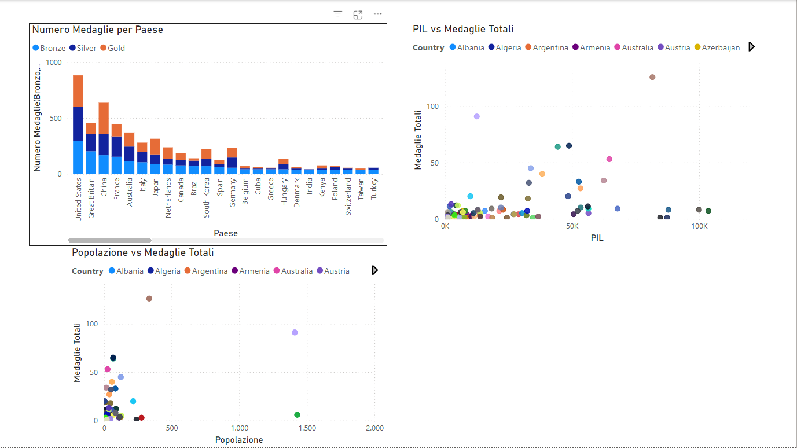
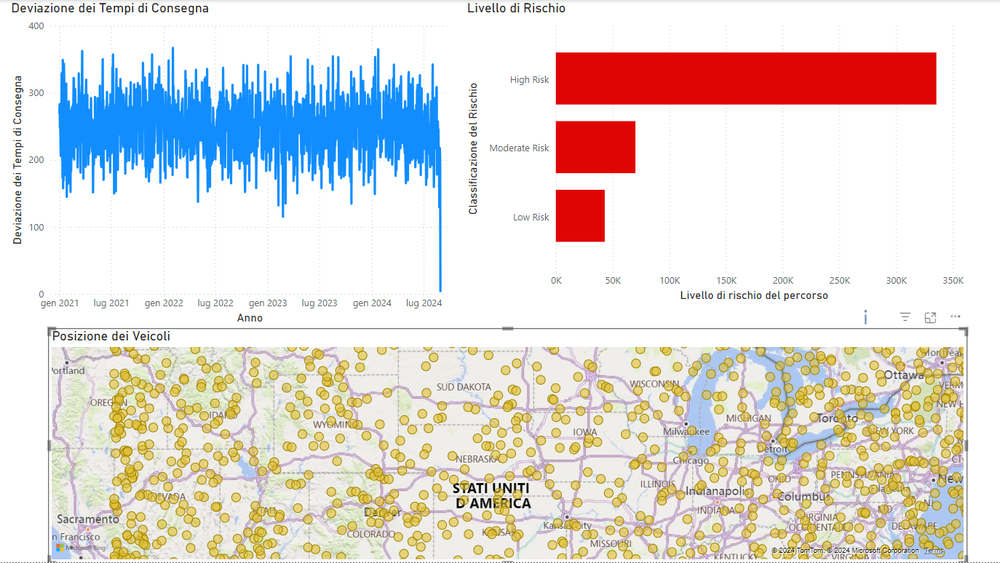
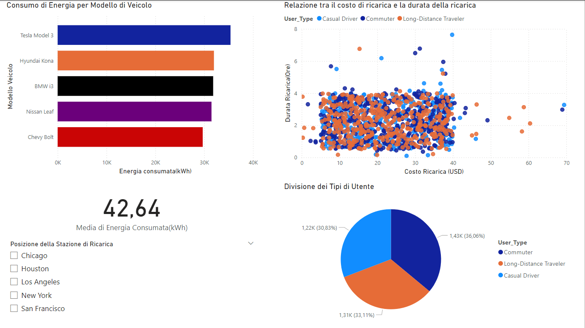

Corso: Data Analytics, Università degli Studi LINK
Docenti: Riccardo Mazzitelli e Claudio Cocciatelli
Obiettivo del Progetto
Questo progetto è stato svolto nell'ambito del corso di Data Analytics. L’obiettivo era acquisire esperienza pratica nelle fasi di migrazione dei dati su cloud e nella creazione di report interattivi con Power BI.
Processo di Migrazione e Tecnologie Utilizzate
Estrazione e Trasformazione dei Dati: Pipeline ETL configurata con Azure Data Factory.
Caricamento nel Database SQL: Utilizzo di Azure SQL Database per archiviazione e gestione dati.
Creazione di Report Interattivi in Power BI
Di seguito sono riportate le visualizzazioni create per i diversi dataset:

Grafico delle medaglie olimpiche per paese e correlazione con il PIL e la Popolazione.

Mappa della posizione dei veicoli e deviazione dei tempi di consegna (Logistics Data).

Grafico a torta che mostra i tipi di utenti di veicoli elettrici e consumo energetico.
Dataset Utilizzati
Di seguito sono riportati i link per scaricare i dataset utilizzati nel progetto:
Il progetto ha migliorato l'accesso ai dati, fornendo insight chiari per decisioni data-driven e consolidando le competenze in cloud computing e visualizzazione dati.